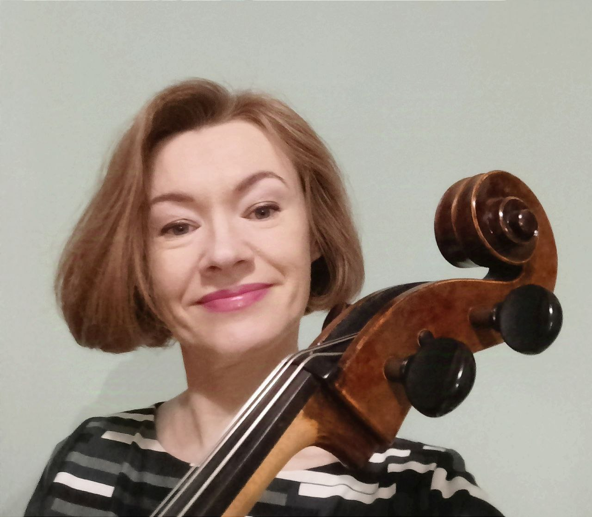
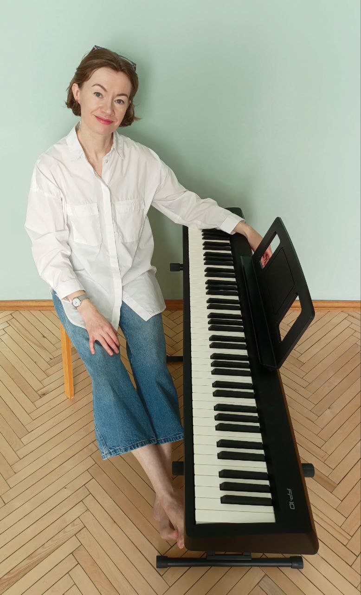
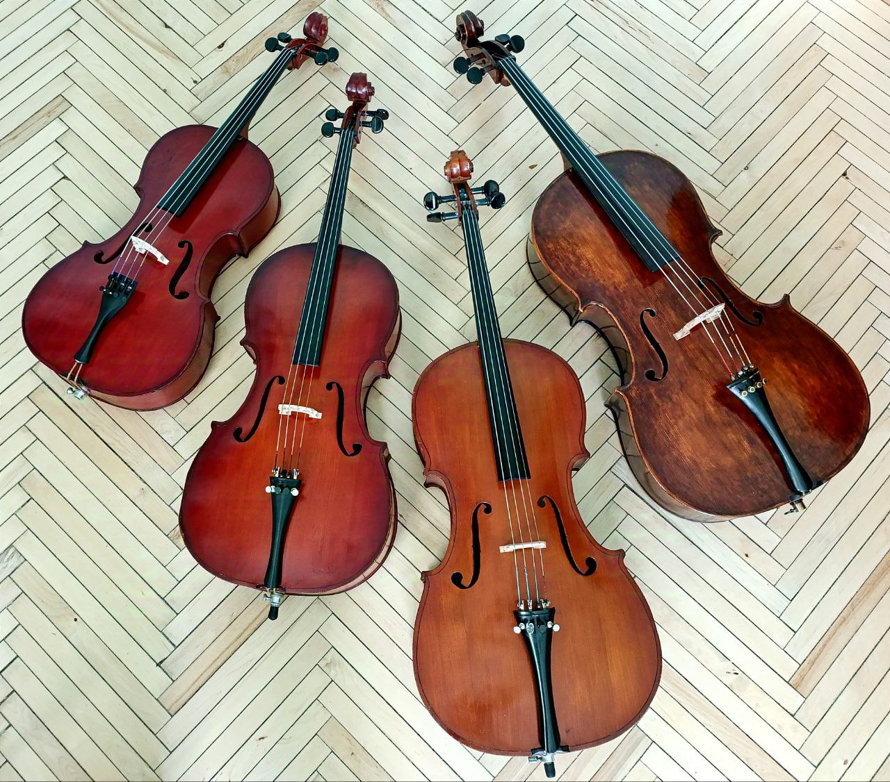

Приветствую всех!
Вам нравится виолончель?
Мечтаете попробовать на ней играть?
Когда-то занимались на виолончели и сейчас решили вернуть навыки?
Хотите приобщить ваших детей к самому потрясающему струнному инструменту?
Вы нашли то, что искали!
Я - Анна, виолончелистка, профессиональный музыкант и преподаватель виолончели. Имею высшее музыкальное образование и огромный, многолетний опыт работы. Учу взрослых и детей играть на виолончели.
У моих учеников всё самое лучшее:
Также я аккомпанирую ученикам на виолончели и фортепиано, делаю переложения для виолончели и фортепиано или для двух виолончелей любой популярной музыки по вашему желанию для совместной игры, сопровождаю на концертах и мероприятиях, опекаю, помогаю в подборе и покупке инструмента (если вы решите иметь свой), рекомендую лучших струнно-смычковых мастеров.
На моих уроках вам гарантирован высокопрофессиональный подход и исключительное внимание! Искренне и с юмором общаясь, мы с вами научимся:
Приходите сами, приводите детей - всем рада!
Я начала заниматься на виолончели с пятилетнего возраста у Н.В. Шпенёвой. У неё же спустя 20 лет и окончила Академию музыки в 2001-м году. Ещё студенткой 2-го курса стала работать в ансамбле солистов Филармонии "Классик-Авангард" - это лучшее, что могло случиться с молодым специалистом струнником! Я попала в своеобразную творческую лабораторию под руководством В. А. Байдова, где рядом с лучшими музыкантами страны исполняла разнообразнейшую музыку: от "Полацкага сшытка", европейской классики, шедевров романтизма до самых современных, ныне живущих композиторов. Девять лет работы там дали уникальные знания и навыки, определили профессиональное отношение к работе и высоко подняли мой статус среди музыкантов-коллег. С "Классик-Авангардом" много ездили выступали в Испании, Швейцарии, Германии, Франции, Турции, дважды (в 2000-ом и 2005-ом гг.) были гостями престижнейшего фестиваля современной музыки "Варшавская осень".
Далее были годы работы в Государственном Симфоническом оркестре и в оркестре Большого театра РБ (несколько лет их совмещала).
Затем перешла и 8 лет работала в Государственном Камерном оркестре РБ под руководством Е.Р. Бушкова. Здесь посчастливилось сотрудничать с выдающимися мировыми музыкантами-солистами. К гастрольным странам добавились Австрия, Италия, Норвегия, Китай и США.
Таким образом накопился огромный сценический опыт, практика работы во всех академических жанрах, навыки взаимодействия с дирижёрами и солистами, расширился кругозор и понимание профессии.
Всегда видела себя в роли музыканта-исполнителя и никогда не думала о преподавании до определённого момента. И когда этот момент наступил, я отнеслась к новой профессии с таким же увлечением и азартом. Проанализировав учебную литературу, пришла к выводу, что мне очень не хватает наглядных нотных материалов для начинающих с нуля. Вдохновившись мастерклассами и открытыми уроками лучших скрипичных и виолончельных педагогов, стала сочинять и оформлять свои собственные материалы (благо, всегда любила и немножко умела рисовать). В итоге, я накопила отличную учебную библиотеку, состоящую как из академического "золотого" репертуара, позволяющего работать по классической, традиционной методике, так и из моих собственных материалов помогающих и ускоряющих процесс.
В 2022 году стала работать учителем в ДШИ. Первый же мой год работы в музыкальной школе сразу принёс Гран-при Республиканского конкурса.
Я владею фортепиано, аккомпанирую ученикам, что позволяет проводить полноценные, интересные занятия. Также делаю переложения для виолончели и фортепиано и для двух виолончелей любой популярной музыки по желанию учащегося.
Для моих занятий вам не нужно покупать инструмент - я предоставляю свои собственные виолончели всех размеров для занятий с учениками любого возраста.
Считаю виолончель самым "человечным" инструментом, обладающим самым красивым и благородным звуком. Её тёплый, бархатный тембр приятен в любых регистрах, а огромный диапазон охватывает все человеческие голоса от баса профундо до колоратурного сопрано.
Тот, кто занимается на виолончели или имеет к ней отношение - избранный! Приглашаю войти в этот избранный, элитный круг, приглашаю на свои занятия, где максимально кратким и понятным путём мы достигнем базового владения инструментом, научимся извлекать качественный звук свободными без зажимов руками, усвоим приёмы постановки и игры, разучим несложные и симпатичные произведения. Всё это с удовольствием, юмором и в простой искренней обстановке!
С радостью работаю как с начинающими любого возраста, так и с продвинутыми учениками из музыкальных школ, колледжей и консерватории. А также сопровождаю на концертах и мероприятиях, оказываю помощь в подборе и покупке инструментов, рекомендую лучших струнно-смычковых мастеров.
Центр Минска: 6 мин. ходьбы от станции метро "Площадь Победы".
Беспроблемная парковка во дворе или поблизости.
Возможен выезд к вам.
Цена урока зависит от его длительности, возраста ученика
(для детей стоимость меньше) и места проведения.